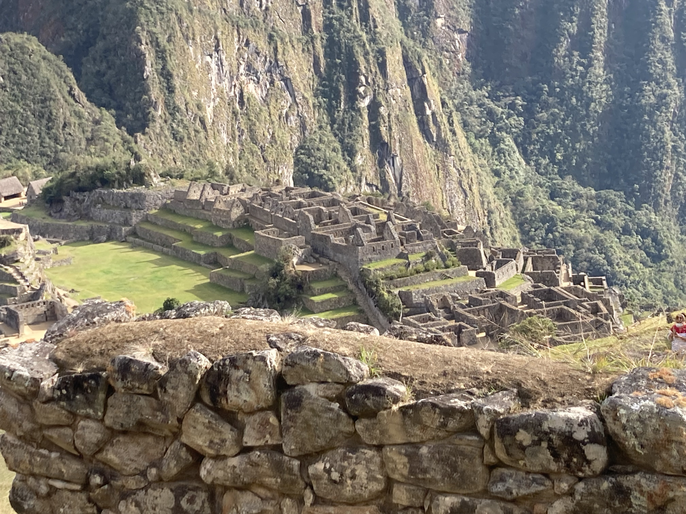

Article 1
Hiking is a common form of exercise. It's a great way to get in shape, increase heart health, and clean out your lungs, although medical consesus hasn't been reached regarding that last point. You can hike for many reasons. This is so cheesy...
This past summer my wife and I travelled to Peru and spent 5 days hiking to Maccu Picchu in the Andes. It was a magnificent trip, although we got Covid-19 in Peru and getting home was much more difficult than we anticipated.
Learn More
